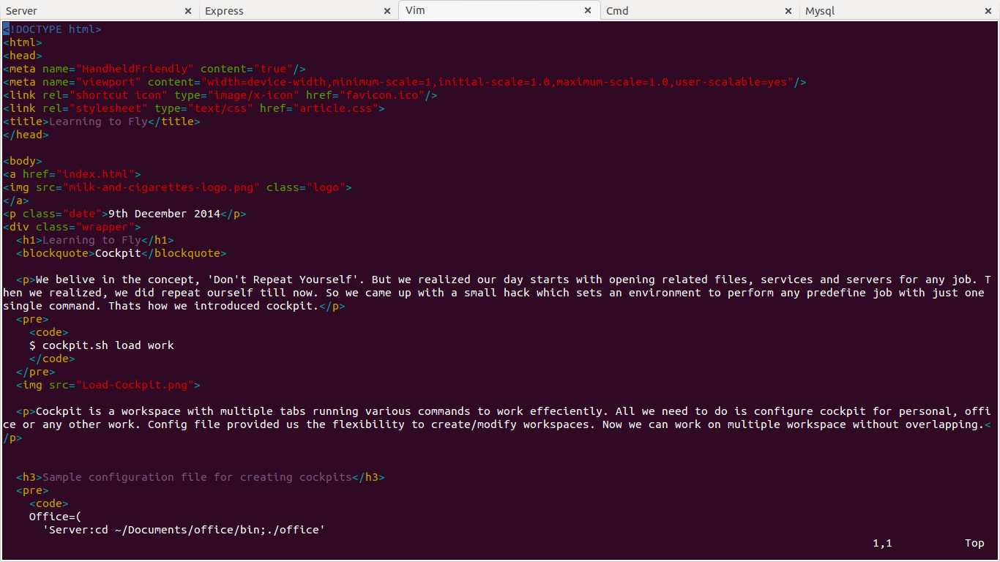

9th December 2014
Wings to fly high, our first product used in our daily life!
We believe in the concept, 'Don't Repeat Yourself'. But we realized our day starts with opening related files, services and servers for any job. Then we realized, we did repeat ourself till now. So we came up with a small hack which sets an environment to perform any predefine job with just one single command. Thats how we introduced cockpit.
$ cockpit.sh load work

Cockpit is a workspace with multiple tabs running various commands to work efficiently. All we need to do is configure cockpit for personal, office or any other work. Config file provided us the flexibility to create/modify workspaces. Now we can work on multiple workspace without overlapping.
Office=(
'Server:cd ~/Documents/office/bin;./office'
'Express:cd ~/Documents/office; supervisor index.js'
'Vim:vim ~/Documents/office/template/about.jade'
'Cmd:clear'
'Mysql:mysql -u root -p'
)
Personal=(
'Server:cd ~/Documents/player/; gulp serve'
'Vim:cd ~/Documents/player/; vim player.html'
'Cmd: clear'
)
But, then, we started to load multiple cockpits and closing each tab one by one was pain in the a**. So we came up with exit functionality to exit all the workspaces. Moreover, we could even exit specific workspace, even specific tab within a workspace.
# To exit all workspaces
$ cockpit.sh exit All
# To exit specific workspaces
$ cockpit.sh exit Office
# To exit single tab
$ cockpit.sh exit Office Express
One more thing, cockpit was modular enough that it was not only limited to terminals. We realized cockpit can execute any command in terminal. So why just stick with command line interface when can even load GUI application with cockpit. We added few commands to open browser with multiple tabs, Office Writer or PDF viewer or any GUI applications in config file.
$ cat ~/.cockpit
Office=(
'Browser:firefox www.google.com www.milkandcigarettes.so'
'Folders:nautilus /home/sajan/Desktop'
'Documents:xdg-open /home/sajan/Desktop/cockpit.odt'
)
Now, I have a peaceful life at work, home or everywhere. The main take aways from this is, a simple hack which helps you in your daily life and that which you would be using everyday, an awesome way to learn and create something for yourself.
Please fell free to fork and contribute Github Repo
Install and enjoy cockpit Cheers! Download